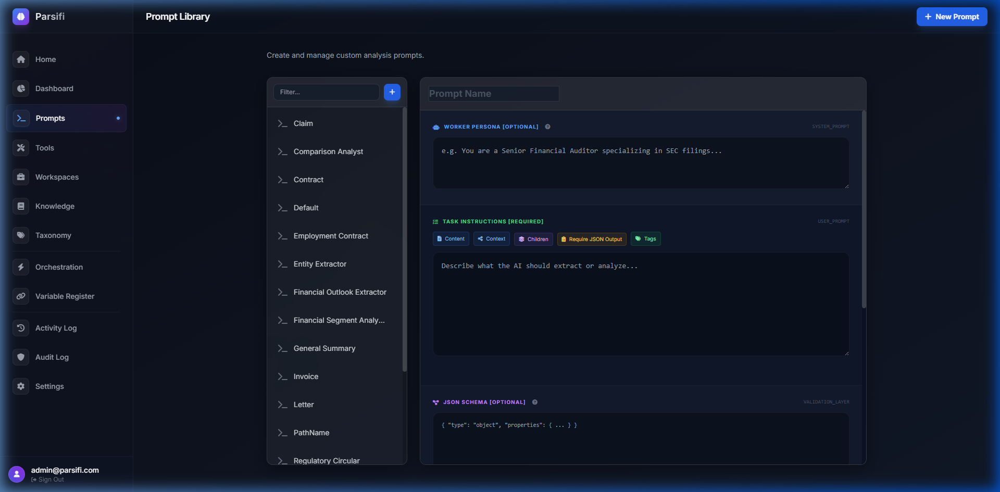
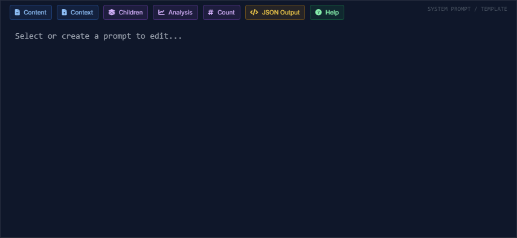
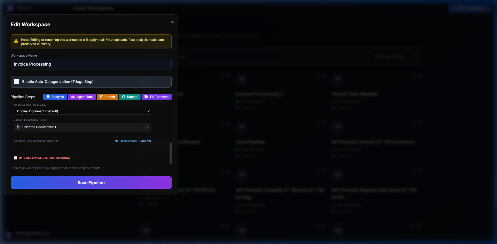

Prompt Library
The Prompt Library allows you to build, manage, and refine system instructions that guide your LLM through complex analysis tasks.

Creating Reusable Prompts
Instead of typing the same instructions repeatedly in the Document Viewer, you can save them in the Prompt Library. A good prompt is highly specific:
You are an expert commercial real estate lawyer.
Review the following lease agreement and extract the Tenant Name, Monthly Rent, and Expiration Date.AI Prompt Generation
If you have an idea but aren't sure how to phrase it, use the Generate via AI button in the prompt editor. Type a brief description (e.g., "Find all risky clauses"), and Parsifi's AI will write a highly optimized, structured prompt for you.
Few-Shot Examples
The most effective way to improve an LLM's accuracy is through "Few-Shot Prompting." In the Prompt Library, you can explicitly add Input/Output pairs to train the AI on the exact format you expect.
- Input:
The lease commences on January 1, 2024, and ends 60 months later. - Output:
{"commencement_date": "2024-01-01", "expiration_date": "2028-12-31"}
Adding just two or three examples dramatically reduces AI hallucinations.
The Tag System
Parsifi uses a dynamic templating engine (Jinja-style tags) to inject context directly into your prompts at runtime. You do not need to manually paste the document text into the prompt box.

Important System Tags:
{{document.content}}: Injects the raw extracted markdown of the currently active document.{{context}}: Injects any external reference files you selected from the Knowledge Base.{{children.analysis}}: Used strictly when running a prompt on a Collection. It gathers the analysis results of every single child document and pastes them into the prompt for aggregation.{{ext_DocumentName.step_StepName}}: Dynamically injects the output of a specific step from a previously analyzed Document or Collection (e.g.,{{ext_MasterAgreement.pdf.step_Summary}}). Use the "Tag Reference" helper in Workspace builder to easily construct these tags.
Using Cross-Document Referencing
You can reference the results of one document directly inside another pipeline without combining them into a single collection. This is incredibly powerful for complex multi-document auditing, cross-referencing against Master Agreements, or dynamic pipeline execution.

Select another document directly in the Workspace Builder to auto-generate the correct ext_ tag.